Martin Manley: My Life and Death
Born 8-15-53, Died 8-15-13 , Age 60
- Home Page
- January 1, 2012
- June 11, 2012
- Suicide Preface
- Why Suicide?
- Why not?
- Why Age 60?
- Self-Serving?
- Suicide - How 2
- Gun Control
- Other Suicides
- Other Quotes
- ------------------------------------
- Growing Up
- OMG: I look 60!
- Mom and Dad
- The Heavens
- My Religion
- Chancel Choir
- Victory O Lord
- The Proposal
- Two Marriages
- First Two Loves
- Pictures
- Trips and Travel
- Writing Fiction
- Music & Poetry
- Movies & TV
- Health
- Sleep Deprived
- Living Donor
- Food & Drink
- Creations
- Sports
- KC Star
- KC Tornado
- My IQ
- Synesthesia
- Poker
- Legal
- JOCO, Ks.
- U.S. Financial
- 911 & Conspiracies
- COOL STUFF
- Births & Deaths
Pictures
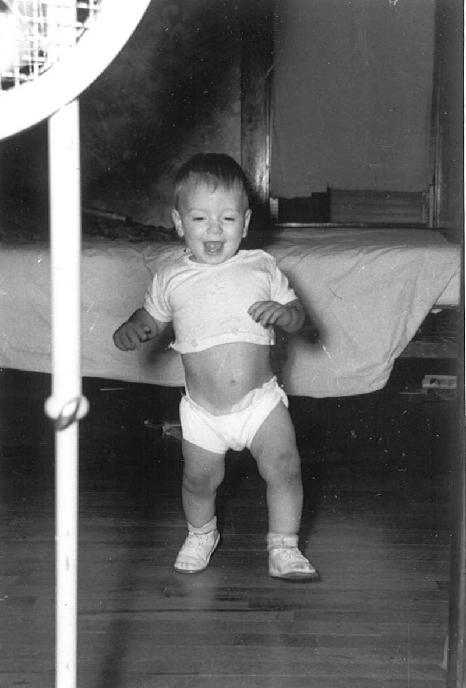
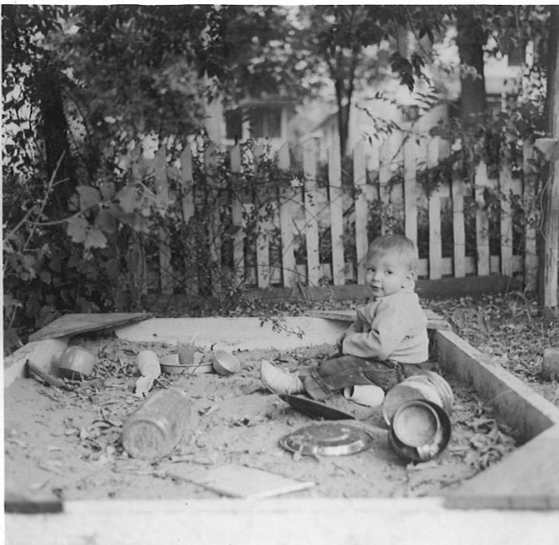
These are pictures of me when I was around one. My mom said I was always a happy baby. It seems odd to me that would be the case considering I'm not sure I ever really learned what happiness was as an adult.
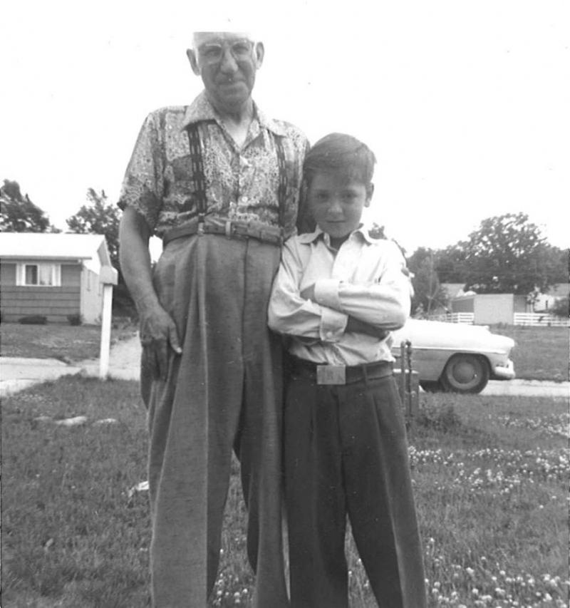 Picture of me with my grand dad (left) at about age nine. This was my father's father. My dad was adopted, so there is no blood relation. I never knew my other three grandparents as they either died before I was born or shortly thereafter. I barely remember by grand dad and, if not for this single picture, might not even remember him at all. The only thing I specifically remember about him was that he showed me how to straighten a bent nail so it could be reused. In the era he grew up in, you didn't throw away nails just because they were bent. I hated throwing anything away, but rather tried to fix it. It's possible, I suppose, that I got part of that from him. He died in 1966 at age 74.
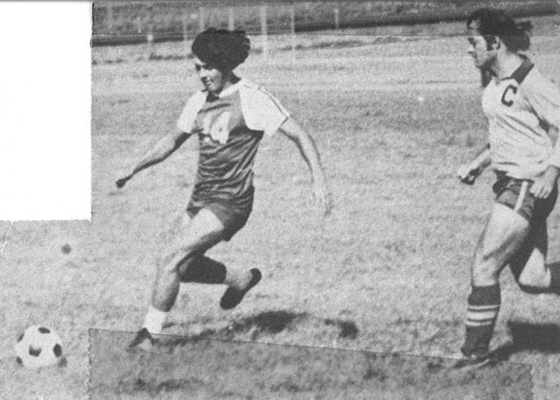
This isn't much of a picture, but it's one of me playing soccer in college. I'm no soccer fan, but I was reasonably good at it. The best thing about me was that I could run all day without stopping. For a halfback, that was crucial.
If you look closely, you can see I have my tongue out. When I was about 10, I was playing football and had my tongue out. I got hit, bit it badly and had a gash in my tongue the rest of my life.
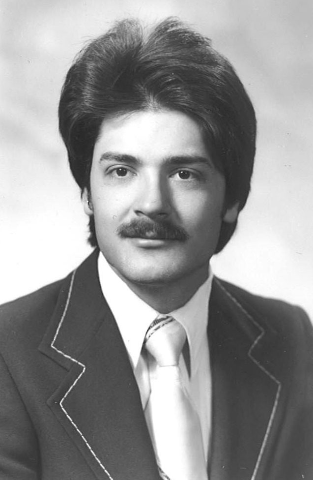
This is me at age 21 - finally old enough to drink. The interesting thing about that is we were raised in a religious home and we never had any alcohol around the house. From the age of 11, we lived out in the sticks - miles from any towns. I rarely had an opportunity to mix with kids who might be drinking until I was a junior in high school. By then, I had decided I didn't want to drink and was somewhat immune to pier pressure. It might also be part of the reason I didn't fit in.
I had never even tasted alcohol up until my sophomore year of college. One day my parents were visiting me at my apartment and we had pop to drink. I tasted it and spit it out. Because I was always bragging about never having drank alcohol, my dad had spiked it as a joke. I didn't have my first REAL drink, however, until a few years later.
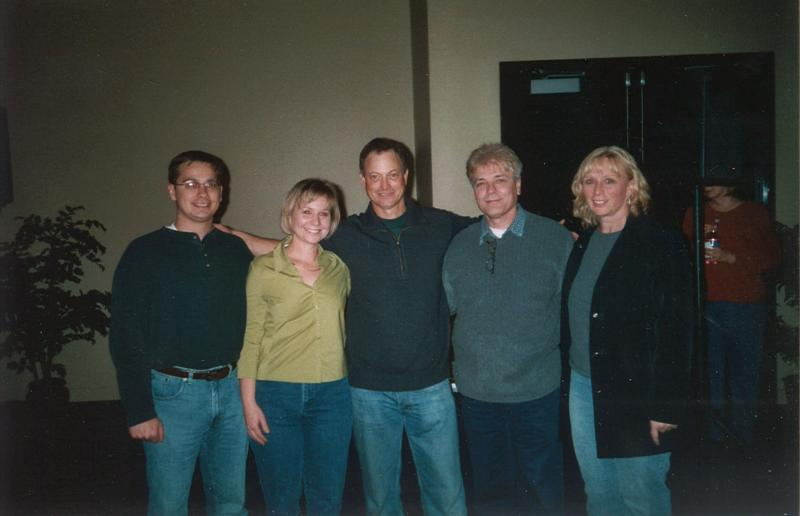
The picture on the left is when I was 31. I'm on the far right with my partner at the time on the far left. The governor of the state of Kansas (John Carlin) is seated. This was in 1984. The picture on the right is me with actor Gary Sinise in 2006. I was 53. Sinise has starred in many pictures - Forrest Gump, Apollo 13, The Green Mile, etc. He also starred in CSI: New York. He plays bass in his band - Lt. Dan Band, named after his character in Forrest Gump. This was after a concert in Kansas City. Shown are Sinise in the middle, me to his left and three friends.
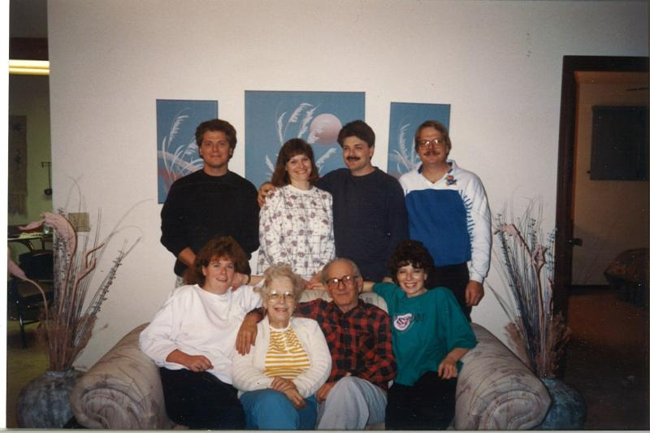
My family in 1994. Top row from left - my brother Mike, Chris my wife, me, Perry my brother-in-law. Bottom row from left, my sister-in-law Jody, my mom Bertha, my dad Francis and my sister Barbie. This was one of those rare occasions when we were all together - taken at Barbie and Perry's house in Garden City, Kansas over Christmas.
These are pictures I took when I was 44. Chris and I had divorced in November of 1997 and after six months or so, I decided to join Matchmaker. That's when I had these pictures taken. They were called Glamour Shots. I'm not sure why the tilt of the head, but they are what they are. Wow, I can't believe how few gray hairs I had at that time!
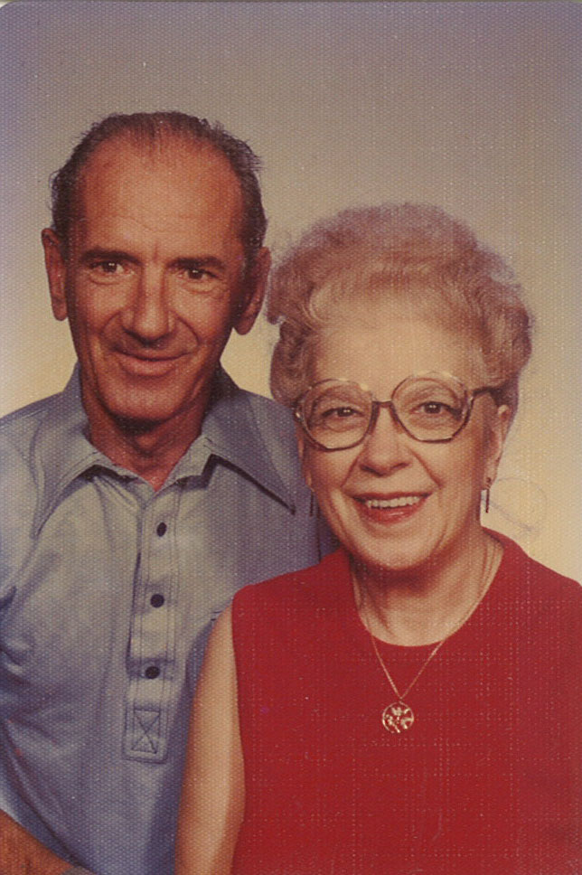
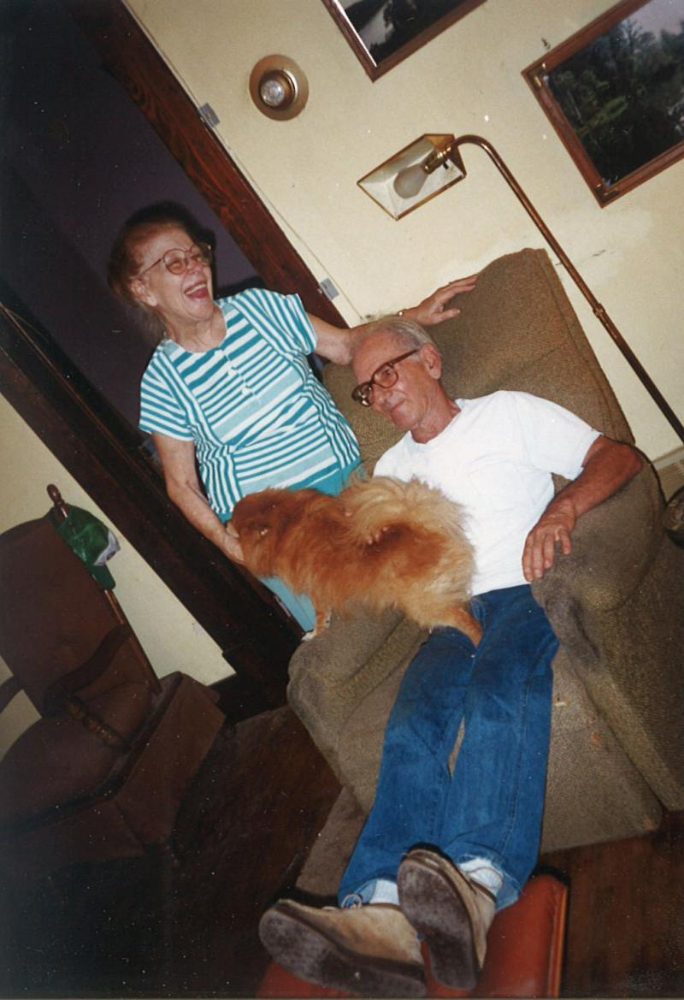
Pictures of my mom (Bertha) and my dad (Francis). The one on the left is roughly 1990. My dad would have been 67 and my mom 64. The one on the right is a few years after that.
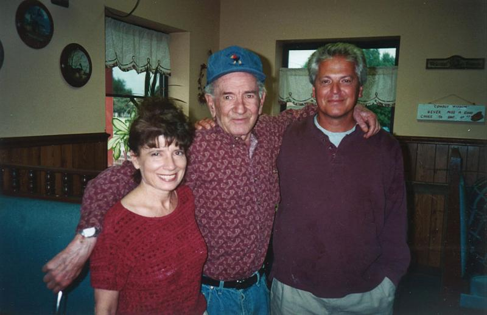
On left, my mom and my sister around the year 1996. On the right is my sister, my dad and my brother. You can tell my brother Mike lives in El Paso where the sun always shines! This picture was after my mom had died around the year 2004.
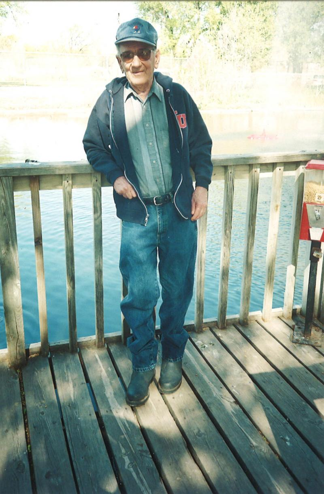
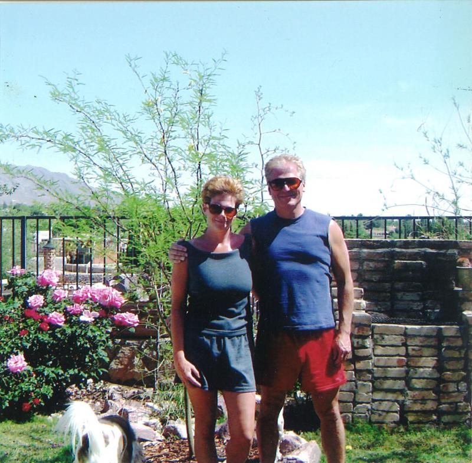
To the left is my dad at the zoo in 2005. Above is my brother Mike and his wife at their home in El Paso. One of the great backyards ever, it has a view of the city below, the mountains to the left and Mexico to the right. Needless to say, they live outdoors where winter is just a dirty word in the dictionary.
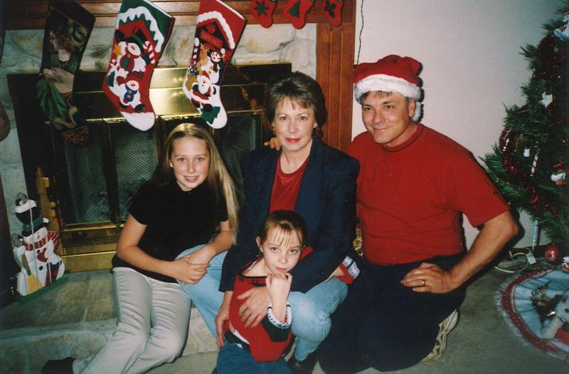
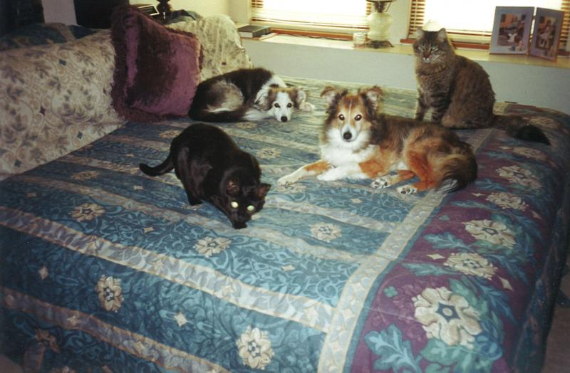
My human family - Jaime (left), Teri, me and Marissa (2002). Teri was my second wife and Jaime and Marissa were my stepdaughters. I loved them very much! Our non human family is left-to-right Lucy, Bambi, Czar and Oliver. Try getting two cats and two dogs to stay in one place for a picture! When Oliver was a kitten he would sleep on my shoulders while I sat in the chair watching TV. Ironically, he grew to be one of the biggest cats I ever saw.
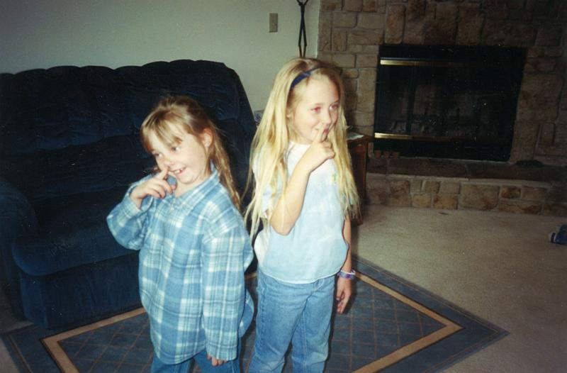 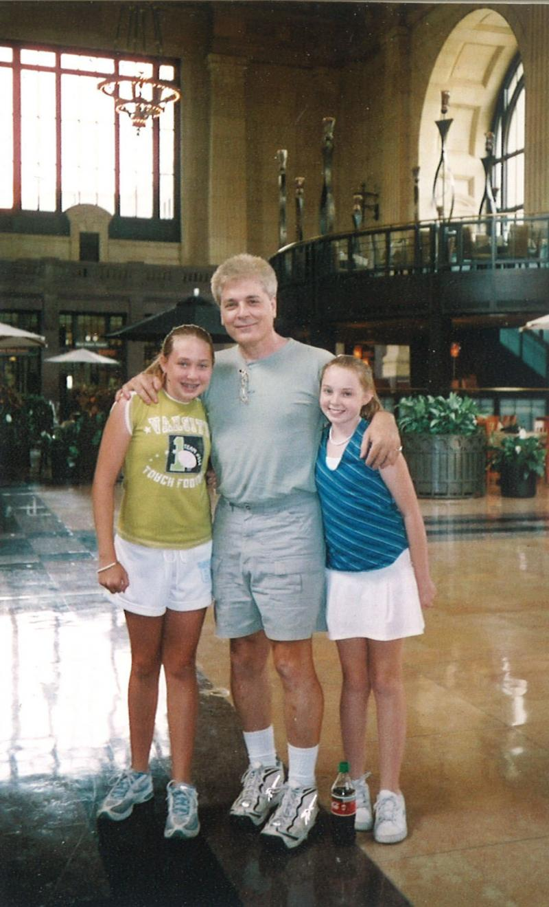
Above Marissa (left) and Jaime. This was a few months after I met their mom (Teri) and before we got married. Marissa was six, Jaime eight. They will kill me (Oh, wait...) if they see this picture where I asked them to pick their nose for the camera.
To the right are Jaime (left) and Marissa in 2004. Missy was 12 and Jaime was 13. This was just a few days after my divorce.
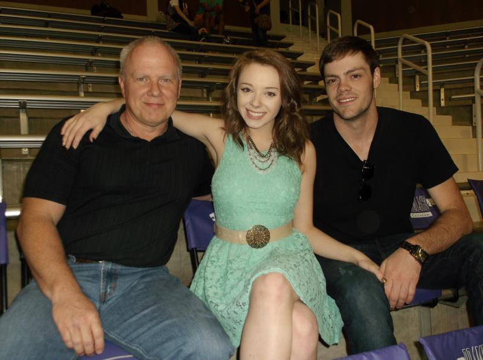
Jaime (left) after her graduation with a Masters in Accounting at Kansas State in 2013. I'm not sure how I got the cool special effects. Above is Marissa with her dad (Steve) and her friend (Mike). This was taken at the same time and same place as Jaime's graduation. I'm so proud of them both!
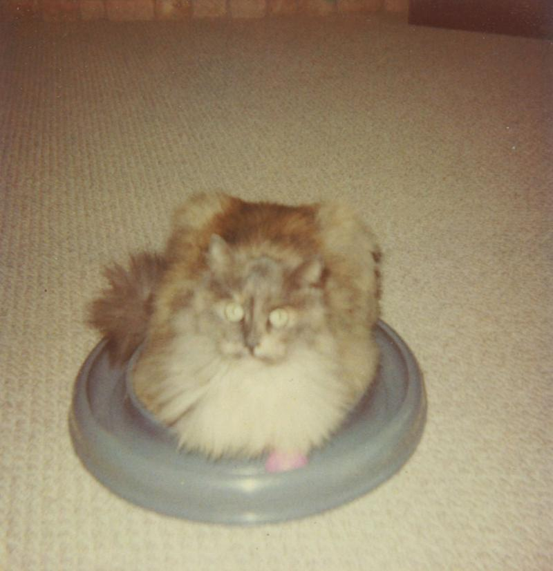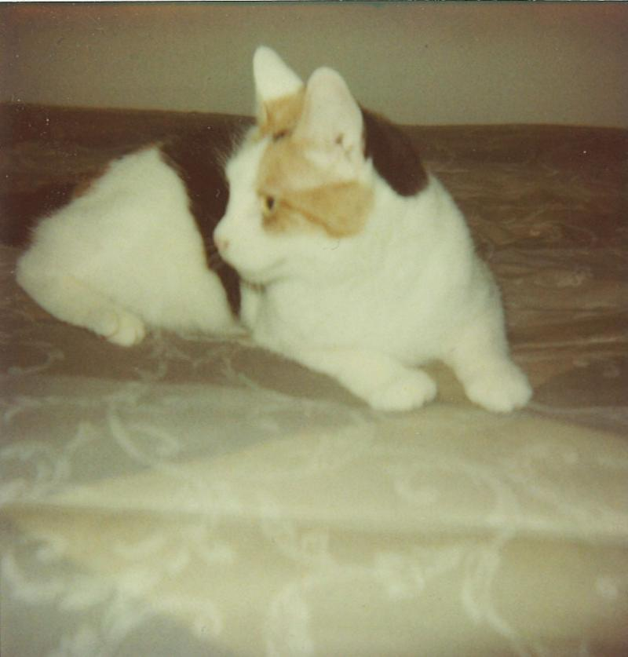
Above are Rudi (left) and Patches (right). I got both in 2004 just after my divorce. At the time, they were each three years old. Rudi's original name was Trudy, but my first wife and I had a great cat (male) named Rudy, so I decided the cat probably wouldn't know the difference if she heard Rudi versus Trudy. Since she's a she... I changed the "y" to an "i". After my first divorce, my ex-wife (Chris) got another cat and named it Patches. So, I had my own version of Rudi and Patches.
Copyright 2013 Martin Manley Life and Death. All rights reserved.